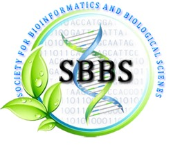
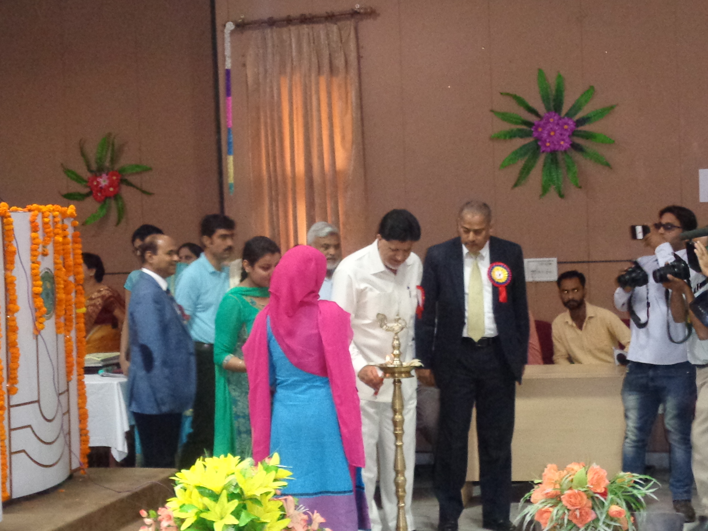
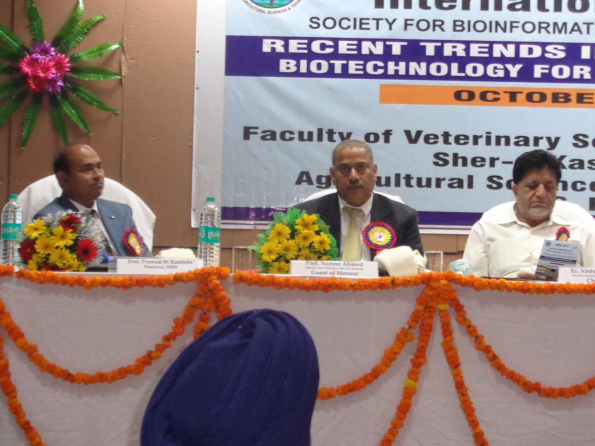
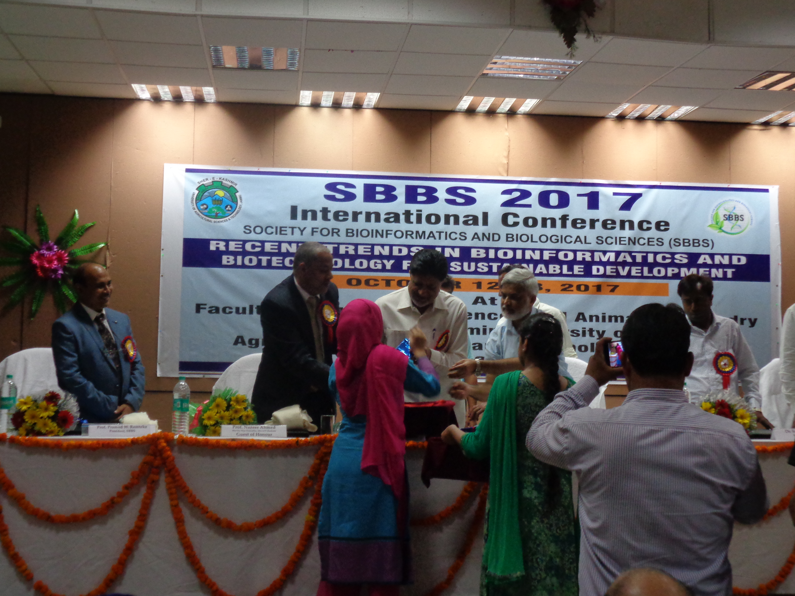
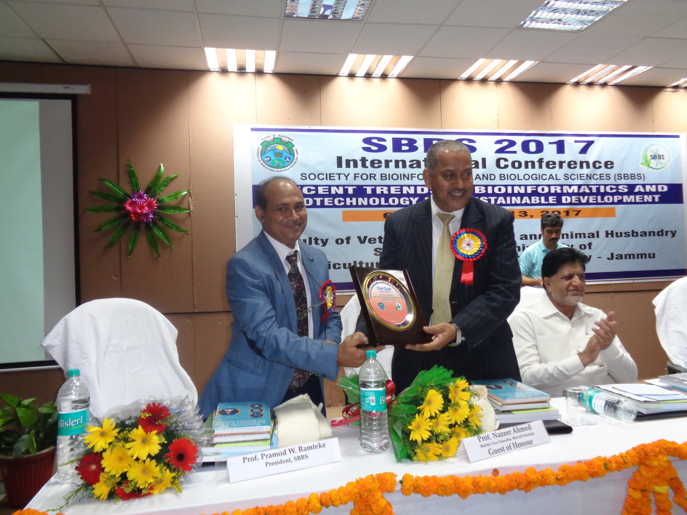
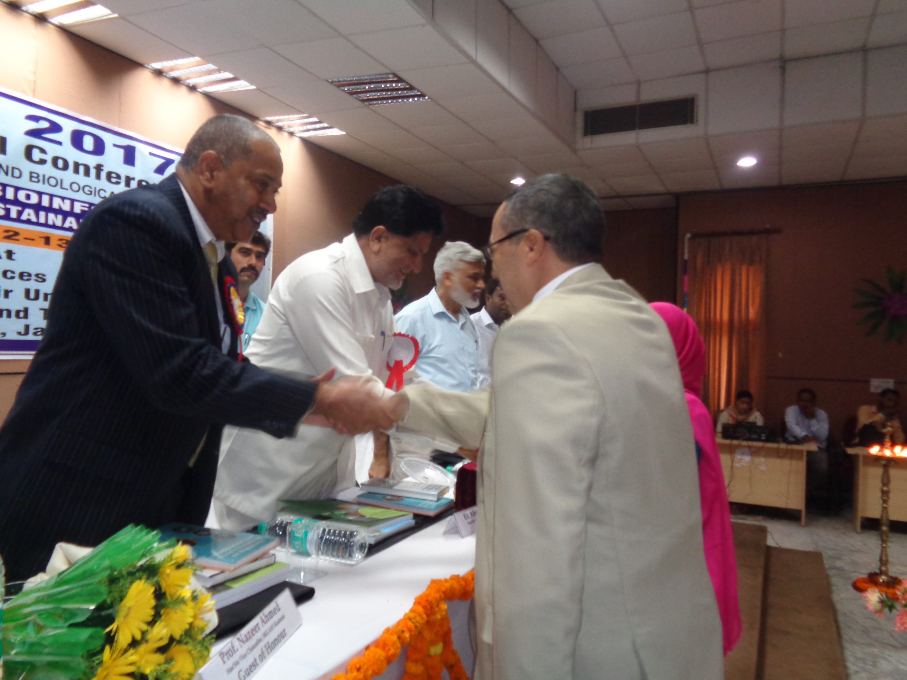
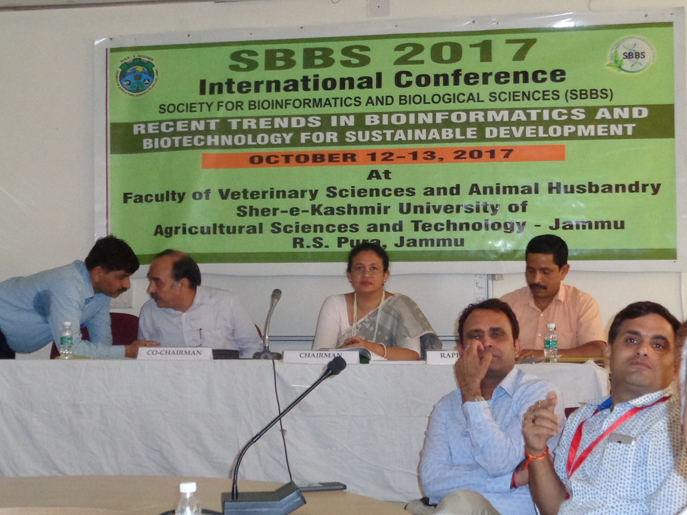

Join us for the premier event in bioinformatics and biological sciences, featuring cutting-edge AI research and multi-omics opportunities.
Download the conference brochure here.
Register NowThe National Conference on Advances in Bioinformatics: Health, Agriculture, Food, Veterinary & Humanities (NCAB-HAFVH-2025) is a premier national platform designed to explore cutting-edge developments in bioinformatics across interconnected domains. This conference will showcase how bioinformatics tools, including AI driven analytics, integration, processing, and are multi-omics big data revolutionizing research and applications in advanced bioinformatics, health, pharmaceutical sciences & forensic sciences, agriculture, food science, advancing veterinary, fisheries, and animal husbandry sciences, as well as humanities, climate change, SDG-2030, and startups. Drawing inspiration from global trends like AI for biomedicine (e.g., AlphaFold for protein prediction), vetinformatics for disease bioinformatics modeling, applications and in addressing climate change and sustainable development goals, the event aims to foster collaboration among academia, industry, startups, and policymakers to advance these critical fields.
Core bioinformatics methodologies, computational tools, and foundational AI/ML research driving advancements across domains
Leveraging bioinformatics for precision medicine, disease modeling, therapeutic development and pharmaceutical sciences, and forensic sciences.
Applications of bioinformatics in precision agriculture, crop improvement, and sustainable farming systems.
Applications of bioinformatics in food safety, nutrition, and cellular agriculture.
Computational tools for animal health, disease sustainable livestock systems.
Integrating bioinformatics with humanities, climate change, green energy, SDG-2030, and startups to address global challenges through data-driven...
Society for Bioinformatics and Biological Sciences (SBBS) is established in 2012 with aims and objective to strengthen area of Bioinformatics and Biological Sciences. SBBS is a registered society (R.No. 631 / 2014-2015, Prayagraj, Uttar Pradesh) under Indian Societies Registration Act 21, 1860. It is an interdisciplinary society dealing with Bioinformatics, Biotechnology, Biological sciences, Computational Biology, Genomics, Proteomics, Agri-Informatics, Animal-Veterinary Sciences, Chemoinformatics, Pharmacology, Pharmaceutical Science and Nanotechnology.
About SBBS





Explore the exciting lineup of events and sessions planned for the conference.
| Date | Time | Event |
|---|---|---|
| Dec 27th, 2025 | 10:00 AM - 05:00 PM | Opening Ceremony & Keynote |
| Dec 28th, 2025 | 10:00 AM - 05:00 PM | Day 2 Sessions |
Any person of good character or well wisher of humanity can become member of the Society. Any person who has interest in the discipline of Bioinformatics and Biological sciences can become the member of the society. Life Members shall have voting right. Interested person shall apply on prescribed form and recommendation of Executive council is mandatory for becoming a Life member.
More About Download FormOrganized by Department of Biosciences, Indrashil University
22nd - 24th January, 2026
Department of Biosciences, Indrashil University Supported by Department of Biotechnology, Govt of India , New Delhi & Gujarat Council on Science and Technology (GUJCOST), DST, Govt of Gujarat
Organized by Department of Botany, Shivprasad Sadanand Jaiswal College in collaboration with Society for Bioinformatics and Biological Science (SBBS)
03-04 February, 2026
Auditorium Shivprasad Sadanand Jaiswal College Arjuni - Morgaon, District - Gondia, Maharashtra, India - 441701
Abstracts not exceeding 300 words with a maximum of 6 keywords on any of the aforesaid themes should be submitted through email to: ncabhafvs2025@gmail.com for consideration of oral/poster presentation. A full-length research paper not exceeding 6000 words should be submitted through the online portal mentioned above. Time allotted for oral presentation is of 8-10 minutes duration. Presentations should preferably be prepared on MS PowerPoint/Keynote. Research works on the above-mentioned thematic areas can also be submitted through electronic posters (e-posters) by individuals. Three best oral/poster presentations and e-posters from each session will be awarded. The best research articles from major scientific areas will be awarded.
Secure your spot at the SBBS NCAB-HAFVH 2025. Early bird registration ends December 25, 2025!
Register Now